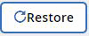

Performing a granular-level restore for Microsoft SharePoint Online Edit on GitHub Request doc changes
Contributors
Within Microsoft SharePoint Online, you can restore granular-level items for a single user, such as individual folders or files. You can also restore granular-level items for a Microsoft Office 365 group site and OneNote notebooks.
By default, only the most recent backup is available for restore. You can update your backup settings to maintain a specified number of backed-up versions of individual files. If you have more versions of a file than you have specified for backup, only the number of versions that you have specified is available for restore.
Restore SharePoint files and folders
-
From the Dashboard, click the number above PROTECTED in the SharePoint box.
-
Click the site for which you need to perform the granular-level restore.
-
Select the category that you need to restore.
Note: If you want to restore specific individual items inside a category, click the content category and then select the individual items.
-
To restore from the most recent backup, click . To restore a previous version of the item, click Show versions, select the version that you want to restore and then click .
-
Select a restore option:
Note: For Microsoft Office 365 Groups, you only have the option to restore to the same site. For Microsoft SharePoint Online, you can restore to the same site or to another site.
-
Restore to the same site
If you restore to the same site, by default, a restore folder with the current date and time stamp is created in the original file location containing the backup copy. If you select the Overwrite with merge option, no restore folder is created. If the version of the backup file and the current file match, the backup is restored to the original location. Any new content in the destination is ignored and unaffected. For example, if the backup contains File1 version5 and the destination contains File1 version 6, a restore with the Overwrite with Merge option selected fails. If you select the Replace the existing content option, the current version of the data is completely replaced with the backup copy.
-
Restore to another site
If you restore to another site, you must enter the destination site in the search field. You can type a portion of the site in the search field to initiate an automatic search for matching sites.
-
-
Click Confirm.
A message is displayed indicating that the restore job was created.
-
Click View the job progress to monitor the progress of the restore.
Restore OneNote notebooks and groups for SharePoint
-
From the Dashboard, click the number above PROTECTED in the OneDrive box.
-
Click the site for which you need to perform the restore.
-
Click Documents.
-
Select the notebooks you want to restore.
Note: If you want to restore a specific group or section within the notebook, click on the notebook to select the groups. Click on the group to select the sections.
-
Click
-
Select a restore option:
-
Restore to the same MySite
If you restore to the same MySite a restore folder with the time stamp is created in the original content location containing the backup copy. If you select Replace the existing content, then your current data is completely replaced by the backup.
-
Restore to another MySite
If you restore to another MySite, you must enter the destination MySite in the search field. You can type in a portion of the destination MySite in the search field to initiate an automatic search for matching destination MySites. A restore folder with the current timestamp is created containing the backup copy.
-